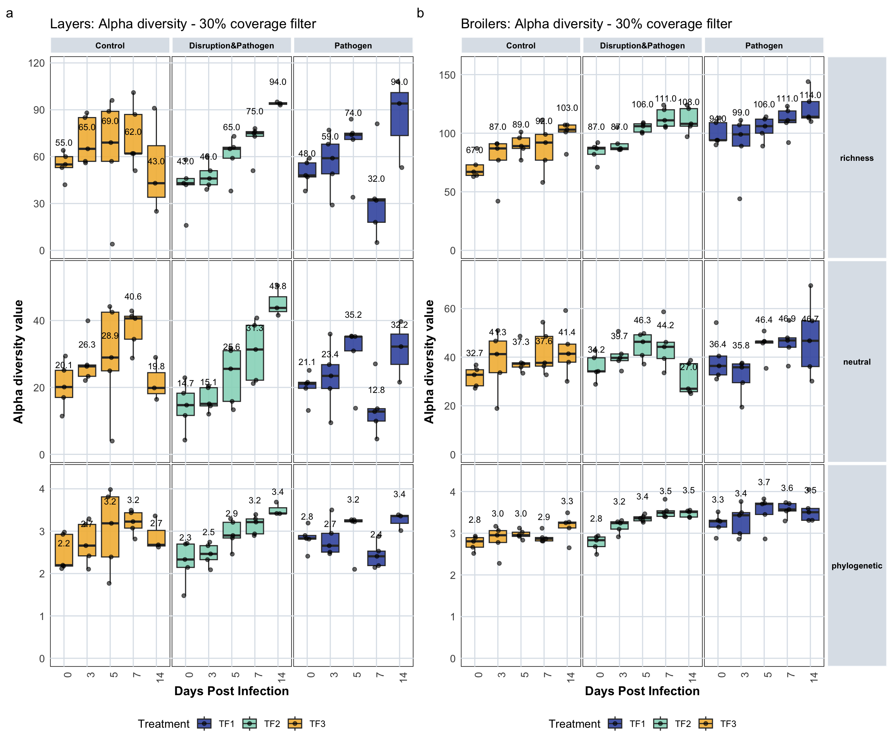
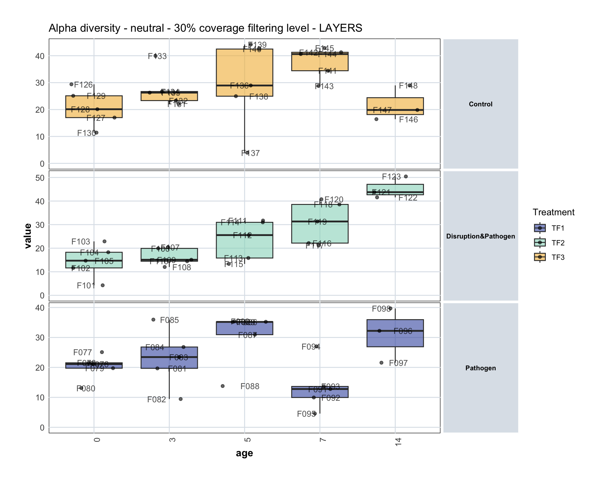
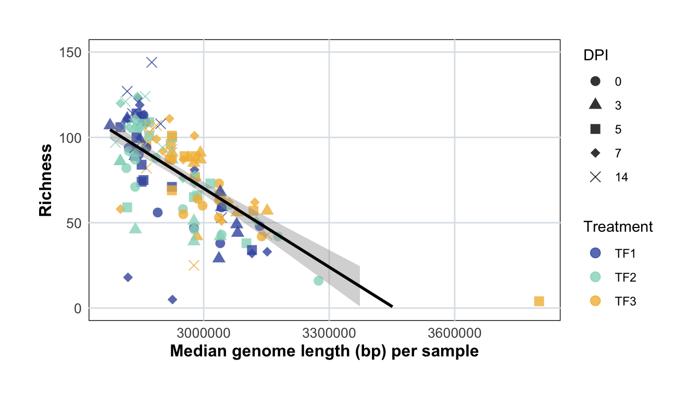
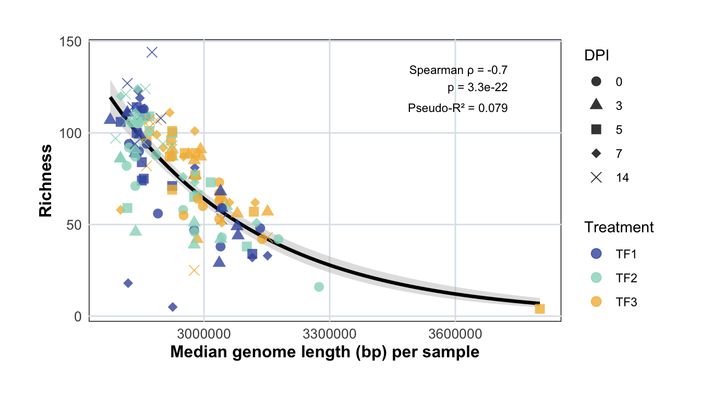

9 Alpha Diversity Analysis
9.2 Alpha Diversity by Breed
Alpha diversity measures within-sample microbial community diversity. This section compares richness and Shannon diversity metrics between breeds and treatments over time.
9.2.1 Layers - Alpha Diversity
# Calculate summary statistics for alpha diversity metrics by treatment, age, and metric
var <- "value"
summary_stats_layer <- tidy_plot_alpha_diversity_genomes_macro %>%
filter(animal_breed == "layer") %>%
filter(filter_level == 'filtered_30') %>%
filter(filter_status == "Retained by filtering") %>% # Remove empty samples
group_by(treatment_expl, age, metric) %>%
summarise(
median = median(.data[[var]], na.rm = TRUE),
IQR = IQR(.data[[var]], na.rm = TRUE),
Q1 = quantile(.data[[var]], 0.25, na.rm = TRUE),
Q3 = quantile(.data[[var]], 0.75, na.rm = TRUE),
.groups = "drop"
) %>%
mutate(label_txt = formatC(median, format = "f", digits = 1))
# Display summary statistics table
knitr::kable(summary_stats_layer, digits = 3, caption = "Summary statistics (median and IQR) for alpha diversity metrics in layers")| treatment_expl | age | metric | median | IQR | Q1 | Q3 | label_txt |
|---|---|---|---|---|---|---|---|
| Control | 0 | richness | 55.000 | 7.000 | 53.000 | 60.000 | 55.0 |
| Control | 0 | neutral | 20.117 | 8.108 | 17.003 | 25.111 | 20.1 |
| Control | 0 | phylogenetic | 2.197 | 0.749 | 2.177 | 2.925 | 2.2 |
| Control | 3 | richness | 65.000 | 28.000 | 57.000 | 85.000 | 65.0 |
| Control | 3 | neutral | 26.291 | 3.371 | 23.326 | 26.697 | 26.3 |
| Control | 3 | phylogenetic | 2.659 | 0.742 | 2.417 | 3.160 | 2.7 |
| Control | 5 | richness | 69.000 | 32.000 | 57.000 | 89.000 | 69.0 |
| Control | 5 | neutral | 28.939 | 17.529 | 24.959 | 42.488 | 28.9 |
| Control | 5 | phylogenetic | 3.185 | 1.418 | 2.392 | 3.810 | 3.2 |
| Control | 7 | richness | 62.000 | 25.000 | 62.000 | 87.000 | 62.0 |
| Control | 7 | neutral | 40.623 | 6.863 | 34.419 | 41.283 | 40.6 |
| Control | 7 | phylogenetic | 3.226 | 0.363 | 3.073 | 3.435 | 3.2 |
| Control | 14 | richness | 43.000 | 33.000 | 34.000 | 67.000 | 43.0 |
| Control | 14 | neutral | 19.843 | 6.275 | 18.136 | 24.411 | 19.8 |
| Control | 14 | phylogenetic | 2.677 | 0.367 | 2.651 | 3.018 | 2.7 |
| Disruption&Pathogen | 0 | richness | 43.000 | 4.000 | 42.000 | 46.000 | 43.0 |
| Disruption&Pathogen | 0 | neutral | 14.707 | 6.645 | 11.629 | 18.274 | 14.7 |
| Disruption&Pathogen | 0 | phylogenetic | 2.332 | 0.551 | 2.145 | 2.696 | 2.3 |
| Disruption&Pathogen | 3 | richness | 46.000 | 9.000 | 42.000 | 51.000 | 46.0 |
| Disruption&Pathogen | 3 | neutral | 15.087 | 5.442 | 14.474 | 19.915 | 15.1 |
| Disruption&Pathogen | 3 | phylogenetic | 2.464 | 0.330 | 2.328 | 2.658 | 2.5 |
| Disruption&Pathogen | 5 | richness | 65.000 | 7.000 | 59.000 | 66.000 | 65.0 |
| Disruption&Pathogen | 5 | neutral | 25.555 | 15.154 | 15.829 | 30.983 | 25.6 |
| Disruption&Pathogen | 5 | phylogenetic | 2.899 | 0.371 | 2.839 | 3.209 | 2.9 |
| Disruption&Pathogen | 7 | richness | 75.000 | 3.000 | 73.000 | 76.000 | 75.0 |
| Disruption&Pathogen | 7 | neutral | 31.333 | 16.407 | 22.160 | 38.567 | 31.3 |
| Disruption&Pathogen | 7 | phylogenetic | 3.215 | 0.353 | 2.936 | 3.289 | 3.2 |
| Disruption&Pathogen | 14 | richness | 94.000 | 1.000 | 93.500 | 94.500 | 94.0 |
| Disruption&Pathogen | 14 | neutral | 43.767 | 4.434 | 42.667 | 47.101 | 43.8 |
| Disruption&Pathogen | 14 | phylogenetic | 3.418 | 0.136 | 3.416 | 3.552 | 3.4 |
| Pathogen | 0 | richness | 48.000 | 9.000 | 47.000 | 56.000 | 48.0 |
| Pathogen | 0 | neutral | 21.117 | 1.799 | 19.734 | 21.533 | 21.1 |
| Pathogen | 0 | phylogenetic | 2.827 | 0.085 | 2.813 | 2.898 | 2.8 |
| Pathogen | 3 | richness | 59.000 | 19.000 | 49.000 | 68.000 | 59.0 |
| Pathogen | 3 | neutral | 23.447 | 7.133 | 19.679 | 26.812 | 23.4 |
| Pathogen | 3 | phylogenetic | 2.657 | 0.444 | 2.506 | 2.950 | 2.7 |
| Pathogen | 5 | richness | 74.000 | 4.000 | 71.000 | 75.000 | 74.0 |
| Pathogen | 5 | neutral | 35.187 | 4.296 | 30.926 | 35.223 | 35.2 |
| Pathogen | 5 | phylogenetic | 3.234 | 0.045 | 3.223 | 3.268 | 3.2 |
| Pathogen | 7 | richness | 32.000 | 15.000 | 18.000 | 33.000 | 32.0 |
| Pathogen | 7 | neutral | 12.785 | 3.696 | 9.948 | 13.645 | 12.8 |
| Pathogen | 7 | phylogenetic | 2.407 | 0.341 | 2.188 | 2.529 | 2.4 |
| Pathogen | 14 | richness | 94.000 | 27.500 | 73.500 | 101.000 | 94.0 |
| Pathogen | 14 | neutral | 32.205 | 9.059 | 26.888 | 35.948 | 32.2 |
| Pathogen | 14 | phylogenetic | 3.358 | 0.186 | 3.186 | 3.372 | 3.4 |
# Create boxplot showing alpha diversity metrics over time for layers
plot_alpha_div_layer <- tidy_plot_alpha_diversity_genomes_macro %>%
filter(animal_breed == "layer") %>%
filter(filter_level == 'filtered_30') %>%
filter(filter_status == "Retained by filtering") %>% # Remove empty samples
ggplot(aes(x = age, y = value, fill = treatment)) +
geom_boxplot(outlier.shape = NA, alpha = 0.9) +
scale_fill_manual(
name = "Treatment",
breaks = names(treatment_colours_bright),
values = treatment_colours_bright
) +
geom_jitter(width = 0.1, alpha = 0.6) +
facet_nested(metric ~ treatment_expl, scales = "free", space = "fixed") +
labs(x = "Days Post Infection", y = "Alpha diversity value") +
scale_y_continuous(expand = expansion(mult = c(0.05, 0.15))) +
# Add median values as text labels
geom_text(
data = summary_stats_layer,
aes(x = age, y = median, label = label_txt),
inherit.aes = FALSE,
vjust = -3.0,
size = 3, alpha = 1, color = "black"
) +
expand_limits(y = 0) +
theme_minimal() +
custom_ggplot_theme +
theme(axis.text.x = element_text(angle = 90, hjust = 1),
plot.margin = margin(0.2, 0.2, 0.2, 0.2)) +
ggtitle("Layers: Alpha diversity - 30% coverage filter")
# Display the plot (commented out - used in combined plot)
# plot_alpha_div_layer9.2.2 Broilers - Alpha Diversity
# Calculate summary statistics for alpha diversity metrics by treatment, age, and metric
var <- "value"
summary_stats_broiler <- tidy_plot_alpha_diversity_genomes_macro %>%
filter(animal_breed == "broiler") %>%
filter(filter_level == 'filtered_30') %>%
filter(filter_status == "Retained by filtering") %>% # Remove empty samples
group_by(treatment_expl, age, metric) %>%
summarise(
median = median(.data[[var]], na.rm = TRUE),
IQR = IQR(.data[[var]], na.rm = TRUE),
Q1 = quantile(.data[[var]], 0.25, na.rm = TRUE),
Q3 = quantile(.data[[var]], 0.75, na.rm = TRUE),
.groups = "drop"
) %>%
mutate(label_txt = formatC(median, format = "f", digits = 1))
# Display summary statistics table
knitr::kable(summary_stats_broiler, digits = 3, caption = "Summary statistics (median and IQR) for alpha diversity metrics in broilers")| treatment_expl | age | metric | median | IQR | Q1 | Q3 | label_txt |
|---|---|---|---|---|---|---|---|
| Control | 0 | richness | 67.000 | 9.000 | 64.000 | 73.000 | 67.0 |
| Control | 0 | neutral | 32.740 | 6.619 | 28.204 | 34.822 | 32.7 |
| Control | 0 | phylogenetic | 2.806 | 0.229 | 2.665 | 2.894 | 2.8 |
| Control | 3 | richness | 87.000 | 14.000 | 77.000 | 91.000 | 87.0 |
| Control | 3 | neutral | 41.261 | 13.024 | 33.612 | 46.636 | 41.3 |
| Control | 3 | phylogenetic | 2.952 | 0.285 | 2.778 | 3.063 | 3.0 |
| Control | 5 | richness | 89.000 | 9.000 | 87.000 | 96.000 | 89.0 |
| Control | 5 | neutral | 37.313 | 1.745 | 35.925 | 37.669 | 37.3 |
| Control | 5 | phylogenetic | 2.953 | 0.100 | 2.925 | 3.025 | 3.0 |
| Control | 7 | richness | 92.000 | 22.000 | 77.000 | 99.000 | 92.0 |
| Control | 7 | neutral | 37.648 | 12.233 | 36.310 | 48.543 | 37.6 |
| Control | 7 | phylogenetic | 2.868 | 0.081 | 2.815 | 2.896 | 2.9 |
| Control | 14 | richness | 103.000 | 6.000 | 101.000 | 107.000 | 103.0 |
| Control | 14 | neutral | 41.396 | 7.419 | 37.936 | 45.355 | 41.4 |
| Control | 14 | phylogenetic | 3.251 | 0.141 | 3.126 | 3.267 | 3.3 |
| Disruption&Pathogen | 0 | richness | 87.000 | 6.000 | 82.000 | 88.000 | 87.0 |
| Disruption&Pathogen | 0 | neutral | 34.151 | 5.778 | 33.950 | 39.728 | 34.2 |
| Disruption&Pathogen | 0 | phylogenetic | 2.833 | 0.230 | 2.680 | 2.910 | 2.8 |
| Disruption&Pathogen | 3 | richness | 87.000 | 5.000 | 86.000 | 91.000 | 87.0 |
| Disruption&Pathogen | 3 | neutral | 39.705 | 2.764 | 38.561 | 41.325 | 39.7 |
| Disruption&Pathogen | 3 | phylogenetic | 3.242 | 0.176 | 3.099 | 3.274 | 3.2 |
| Disruption&Pathogen | 5 | richness | 106.000 | 7.000 | 101.000 | 108.000 | 106.0 |
| Disruption&Pathogen | 5 | neutral | 46.319 | 8.434 | 40.774 | 49.208 | 46.3 |
| Disruption&Pathogen | 5 | phylogenetic | 3.358 | 0.096 | 3.298 | 3.393 | 3.4 |
| Disruption&Pathogen | 7 | richness | 111.000 | 14.000 | 106.000 | 120.000 | 111.0 |
| Disruption&Pathogen | 7 | neutral | 44.249 | 6.717 | 39.427 | 46.144 | 44.2 |
| Disruption&Pathogen | 7 | phylogenetic | 3.492 | 0.135 | 3.404 | 3.539 | 3.5 |
| Disruption&Pathogen | 14 | richness | 108.000 | 15.000 | 106.000 | 121.000 | 108.0 |
| Disruption&Pathogen | 14 | neutral | 26.992 | 11.555 | 25.777 | 37.332 | 27.0 |
| Disruption&Pathogen | 14 | phylogenetic | 3.510 | 0.146 | 3.388 | 3.534 | 3.5 |
| Pathogen | 0 | richness | 94.000 | 15.000 | 94.000 | 109.000 | 94.0 |
| Pathogen | 0 | neutral | 36.391 | 7.752 | 32.702 | 40.454 | 36.4 |
| Pathogen | 0 | phylogenetic | 3.286 | 0.165 | 3.147 | 3.311 | 3.3 |
| Pathogen | 3 | richness | 99.000 | 18.000 | 89.000 | 107.000 | 99.0 |
| Pathogen | 3 | neutral | 35.836 | 7.711 | 29.498 | 37.208 | 35.8 |
| Pathogen | 3 | phylogenetic | 3.431 | 0.503 | 2.992 | 3.495 | 3.4 |
| Pathogen | 5 | richness | 106.000 | 12.000 | 100.000 | 112.000 | 106.0 |
| Pathogen | 5 | neutral | 46.431 | 0.719 | 45.809 | 46.528 | 46.4 |
| Pathogen | 5 | phylogenetic | 3.703 | 0.271 | 3.450 | 3.722 | 3.7 |
| Pathogen | 7 | richness | 111.000 | 10.000 | 109.000 | 119.000 | 111.0 |
| Pathogen | 7 | neutral | 46.888 | 3.873 | 44.072 | 47.946 | 46.9 |
| Pathogen | 7 | phylogenetic | 3.569 | 0.177 | 3.534 | 3.711 | 3.6 |
| Pathogen | 14 | richness | 114.000 | 14.000 | 113.000 | 127.000 | 114.0 |
| Pathogen | 14 | neutral | 46.740 | 18.788 | 36.132 | 54.920 | 46.7 |
| Pathogen | 14 | phylogenetic | 3.504 | 0.284 | 3.311 | 3.595 | 3.5 |
# Create boxplot showing alpha diversity metrics over time for broilers
plot_alpha_div_broiler <- tidy_plot_alpha_diversity_genomes_macro %>%
filter(animal_breed == "broiler") %>%
filter(filter_level == 'filtered_30') %>%
filter(filter_status == "Retained by filtering") %>% # Remove empty samples
ggplot(aes(x = age, y = value, fill = treatment)) +
geom_boxplot(outlier.shape = NA, alpha = 0.9) +
scale_fill_manual(
name = "Treatment",
breaks = names(treatment_colours_bright),
values = treatment_colours_bright
) +
geom_jitter(width = 0.1, alpha = 0.6) +
facet_nested(metric ~ treatment_expl, scales = "free", space = "fixed") +
labs(x = "Days Post Infection", y = "Alpha diversity value") +
scale_y_continuous(expand = expansion(mult = c(0.05, 0.15))) +
# Add median values as text labels
geom_text(
data = summary_stats_broiler,
aes(x = age, y = median, label = label_txt),
inherit.aes = FALSE,
vjust = -3.0,
size = 3, alpha = 1, color = "black"
) +
expand_limits(y = 0) +
theme_minimal() +
custom_ggplot_theme +
theme(axis.text.x = element_text(angle = 90, hjust = 1),
plot.margin = margin(0.2, 0.2, 0.2, 0.2)) +
ggtitle("Broilers: Alpha diversity - 30% coverage filter")
# Display the plot (commented out - used in combined plot)
# plot_alpha_div_broiler9.2.3 Combined Visualization
# Adjust theme for side-by-side display (remove duplicate y-axis labels)
plot_alpha_div_layer <- plot_alpha_div_layer +
theme(
strip.background.y = element_blank(),
strip.text.y.right = element_blank()
)
# Combine both plots side-by-side
(plot_alpha_div_layer | plot_alpha_div_broiler) +
plot_annotation(tag_levels = 'a') &
theme(legend.position = "bottom", legend.box = "vertical")
9.3 Detailed Alpha Diversity - Layers with Animal Labels
# Create detailed plot showing individual animals labeled for layers
# This plot uses the neutral (Shannon) diversity metric
tidy_plot_alpha_diversity_genomes_macro %>%
filter(animal_breed == "layer") %>%
filter(filter_level == 'filtered_30') %>%
filter(filter_status == "Retained by filtering") %>% # Remove empty samples
filter(metric == "neutral") %>%
ggplot(aes(x = age, y = value, fill = treatment)) +
geom_boxplot(outlier.shape = NA, alpha = 0.6) +
scale_fill_manual(
name = "Treatment",
breaks = names(treatment_colours_bright),
values = treatment_colours_bright
) +
geom_jitter(width = 0.3, alpha = 0.6) +
facet_nested(treatment_expl ~ ., scales = "free", space = "fixed") +
# Add animal labels to individual points
geom_text(
aes(label = animal),
position = position_jitter(width = 0.2, height = 0),
size = 3.5, alpha = 0.7, check_overlap = FALSE
) +
expand_limits(y = 0) +
theme_minimal() +
custom_ggplot_theme +
theme(axis.text.x = element_text(angle = 90, hjust = 1)) +
ggtitle("Alpha diversity - neutral - 30% coverage filtering level - LAYERS")
9.4 Relationship Between Genome Length and Alpha Diversity
This section explores the relationship between median genome length per sample and alpha diversity (richness).
9.4.1 Prepare Data: Calculate Median Genome Length
# Calculate median genome length per sample
# First, remove zero-count entries to get accurate length calculations
tidy_plot_genome_counts_filt_30_macro_closed_zerosrem <- tidy_plot_genome_counts_filt_30_macro_closed %>%
filter(count > 0)
# Calculate median genome length for each sample
median_lengths <- tidy_plot_genome_counts_filt_30_macro_closed_zerosrem %>%
group_by(microsample) %>%
summarise(median_genome_length = median(length, na.rm = TRUE), .groups = "drop")
# Join median lengths with alpha diversity data
alpha_div_macro_filtered_30_gen_length <- alpha_div_macro_filtered_30 %>%
left_join(median_lengths, by = join_by(microsample == microsample)) %>%
left_join(sample_metadata_macro, by = join_by(microsample == sample))9.4.2 Visualize Relationship: Linear Model
# Create scatter plot showing relationship between median genome length and richness
# Points colored by treatment, shaped by days post-infection
alpha_div_macro_filtered_30_gen_length %>%
filter(treatment != "TF0") %>% # Exclude negative controls
ggplot(aes(x = median_genome_length, y = richness, color = treatment, shape = factor(age))) +
geom_point(size = 3, alpha = 0.8) +
# Add linear regression line with confidence interval
geom_smooth(method = "lm", se = TRUE, aes(group = 1), color = "black", linewidth = 1) +
scale_color_manual(values = treatment_colours_bright, name = "Treatment") +
scale_shape_manual(
name = "DPI",
values = c("0" = 16, "3" = 17, "5" = 15, "7" = 18, "14" = 4)
) +
labs(x = "Median genome length (bp) per sample", y = "Richness") +
ylim(c(0, 150)) +
theme_minimal() +
custom_ggplot_theme
9.4.3 Statistical Modeling: Negative Binomial Regression
# Recalculate median lengths (if needed) and prepare data for modeling
tidy_plot_genome_counts_filt_30_macro_closed_zerosrem <- tidy_plot_genome_counts_filt_30_macro_closed %>%
filter(count > 0)
median_lengths <- tidy_plot_genome_counts_filt_30_macro_closed_zerosrem %>%
group_by(microsample) %>%
summarise(median_genome_length = median(length, na.rm = TRUE), .groups = "drop")
# Join with alpha diversity and filter out controls
alpha_div_macro_filtered_30_gen_length <- alpha_div_macro_filtered_30 %>%
left_join(median_lengths, by = join_by(microsample == microsample)) %>%
left_join(sample_metadata_macro, by = join_by(microsample == sample)) %>%
filter(treatment != "TF0")# Fit negative binomial regression model (appropriate for count data)
model_nb <- glm.nb(richness ~ median_genome_length,
data = alpha_div_macro_filtered_30_gen_length)
# Fit null model (intercept only) for comparison
model_null <- glm.nb(richness ~ 1,
data = alpha_div_macro_filtered_30_gen_length)
# Calculate McFadden pseudo-R² (model fit metric)
pseudo_r2 <- 1 - (logLik(model_nb) / logLik(model_null))
cat("McFadden pseudo-R² =", round(pseudo_r2, 3), "\n")McFadden pseudo-R² = 0.079 # Calculate Spearman correlation (non-parametric)
cor_test <- cor.test(
~ richness + median_genome_length,
data = alpha_div_macro_filtered_30_gen_length,
method = "spearman"
)
rho <- cor_test$estimate
pval <- cor_test$p.value
cat("Spearman correlation (ρ) =", round(rho, 3), ", p =", signif(pval, 3), "\n")Spearman correlation (ρ) = -0.696 , p = 3.27e-22 # Create prediction data frame for model visualization
newdata <- data.frame(
median_genome_length = seq(
min(alpha_div_macro_filtered_30_gen_length$median_genome_length, na.rm = TRUE),
max(alpha_div_macro_filtered_30_gen_length$median_genome_length, na.rm = TRUE),
length.out = 200
)
)
# Get predictions and standard errors on link scale
pred <- predict(model_nb, newdata, type = "link", se.fit = TRUE)
# Back-transform predictions to response scale and calculate 95% confidence intervals
newdata$fit <- exp(pred$fit)
newdata$lwr <- exp(pred$fit - 1.96 * pred$se.fit) # Lower 95% CI
newdata$upr <- exp(pred$fit + 1.96 * pred$se.fit) # Upper 95% CI
# Position for statistics annotations
x_pos <- max(alpha_div_macro_filtered_30_gen_length$median_genome_length, na.rm = TRUE) * 0.98
y_pos <- max(alpha_div_macro_filtered_30_gen_length$richness, na.rm = TRUE) * 0.95
# Create plot with fitted negative binomial curve
ggplot(alpha_div_macro_filtered_30_gen_length,
aes(x = median_genome_length, y = richness)) +
# Confidence interval ribbon
geom_ribbon(data = newdata,
aes(x = median_genome_length, ymin = lwr, ymax = upr),
fill = "grey70", alpha = 0.4, inherit.aes = FALSE) +
# Fitted curve
geom_line(data = newdata,
aes(x = median_genome_length, y = fit),
color = "black", linewidth = 1.2, inherit.aes = FALSE) +
# Data points
geom_point(aes(color = treatment, shape = factor(age)),
size = 3, alpha = 0.8) +
# Spearman correlation annotation
annotate("text",
x = x_pos, y = y_pos,
label = paste0("Spearman ρ = ", round(rho, 2),
"\np = ", signif(pval, 2)),
hjust = 1, vjust = 1, size = 3) +
# Pseudo-R² annotation
annotate("text",
x = x_pos, y = y_pos * 0.85,
label = paste0("Pseudo-R² = ", round(pseudo_r2, 3)),
hjust = 1, vjust = 1, size = 3) +
scale_color_manual(values = treatment_colours_bright, name = "Treatment") +
scale_shape_manual(name = "DPI",
values = c("0" = 16, "3" = 17, "5" = 15, "7" = 18, "14" = 4)) +
labs(x = "Median genome length (bp) per sample", y = "Richness") +
theme_minimal() +
custom_ggplot_theme